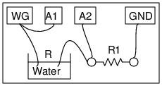

Schematic

Instructions
- Make connections as shown in the figure.
- Current through the resistor R1, I = A2 / R1
- Electrical resistance of water is given by (A1-A2)/I
- Perform the same experiment using DC from PV1 instead of the AC from WG.
- Are you getting a stable reading using DC ? If not, Why ?